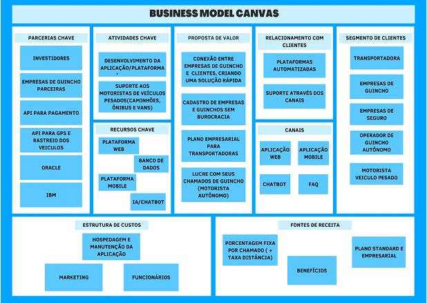

Nosso Business Model Canvas
Parcerias Chaves
Empresas de guincho parceiras: Elas são uma das bases para o nosso negócio acontecer, precisamos de que estejam à nossa disposição para atender nossa demanda.
API de pagamento: Ter uma parceria com uma boa empresa que fornece uma API de pagamento confiável é extremamente importante, tanto para os nossos clientes estarem fazendo seus pagamentos de forma segura, quanto para nós estarmos pagando nossos parceiros de forma rápida e automatizada.
API GPS para rastrear: Um dos diferenciais do nosso negócio é a possibilidade do motorista estar monitorando o percurso e o tempo que o seu guincho vai levar para chegar a sua localização.
Oracle: A base de dados que coletamos é essencial para estarmos aprimorando nossa AI e deixando nossos serviços mais rápidos e certeiros. Ter um banco de dados seguro e confiável é imprescindível.
IBM: Watson da IBM é uma plataforma de serviços cognitivos, que utiliza um processo para adquirir conhecimento semelhante à da mente humana. Esse processo irá permitir que nossa plataforma entenda de forma mais rápida o perfil e a demanda dos nossos clientes, ajudando a melhorá-la constantemente.
Atividades Chaves
Desenvolvimento aplicação/software: Nosso diferencial depende de uma plataforma que ajuda o cliente a resolver sua emergência da forma mais rápida e automatizada possível. Estar constantemente desenvolvendo-a é uma das atividades que permite ganharmos um maior espaço de mercado.
Suporte aos motoristas de veículos:Apesar de estarmos trabalhando com muita tecnologia e automatizações de sistemas, não podemos esquecer que nosso principal cliente, e o que permite que nossa plataforma exista, ainda é humano. O respeito que deve existir nessa relação é extremamente importante, para estarmos melhorando nossos serviços, deixando nossos clientes mais satisfeitos e ganhando espaço no mercado.
Recursos Chaves
Plataforma Web/mobile: Esses recursos se tornam prioridades, pois são a forma como nossos clientes têm de acessar nossos serviços. É o nosso grande diferencial de venda.
Banco de Dados Coleta de dados para estarmos melhorando nossos serviços de AI e conhecendo melhor nossos clientes e seus problemas.
AI Ajuda a entendermos problemas de forma mais rápida e resolvê-los. A AI ajuda a desenvolvermos nossa plataforma de forma mais rápida.
Proposta de Valor
Conexão rápida entre a empresa de guincho e o motorista: Servimos como um intermediário dessa relação, o cliente não precisa se preocupar em conhecer um guincho quando ele quebra em algum local, que talvez, sequer conheça. Recebemos sua localização e o redirecionaremos para o operador de guincho disponível mais próximo de sua localização.
Cadastro de empresas de guincho para prestarem serviços: Servimos como um intermediário dessa relação, o cliente não precisa se preocupar em conhecer um guincho quando ele quebra em algum local, que talvez, sequer conheça. Recebemos sua localização e o redirecionaremos para o operador de guincho disponível mais próximo de sua localização.
Plano empresarial para transportadoras: Transportadoras que possuem um grande número de veículos e uma alta rotatividade, contribuímos oferecendo um serviço diferencial de suporte e prevenção. Ajudamos a rastrear os veículos ao longo de suas rotas e facilitamos o processo de requisição de um guincho em caso de emergência, com um cadastro já pré-realizado.
Relacionamento com Clientes
Plataformas automatizadas: Através do nosso chatbot/AI, respondemos de forma rápida as perguntas principais e podemos guiar nosso usuário para solucionar alguns dos seus problemas mais básicos.
Suporte através dos nossos canais de comunicação: Caso nosso chatbot/AI não seja capaz de resolver o problema do nosso cliente de forma eficaz ainda temos nossos canais de comunicação onde podemos oferecer um serviço personalizado com um dos nossos atendentes e chegarmos juntos na melhor forma de resolver o problema do nosso cliente.
Canais
Distribuição: Nossa principal forma de distribuição é através das apps stores das principais plataformas (google store, apple store, Microsoft store). Nosso app também pode ser baixado no nosso site e nossos serviços também podem ser usados através dele.
Comunicação: Aqui temos os canais que nossos clientes podem entrar em contato conosco para sanar alguma dúvida ou problema. Temos a página de FAQ, em caso de necessidade de um atendimento, temos também suporte por whatsapp ou telefone.
Venda: Nossos clientes podem utilizar nossos serviços através de uma requisição pessoal ou através de um plano na seguradora.
Fontes de Receita
Estrutura de Custos
Hospedagem e manutenção da aplicação: Utilização de bons servidores para evitar problemas com número de tráfego de usuários assim como para uma boa proteção dos seus dados.
Marketing: É necessário mostrarmos às pessoas os nossos serviços e como eles funcionam, engajar seu interesse e captar clientes. Marketing é essencial para uma boa comunicação entre nosso negócio e público alvo que desejamos chamar atenção.
Funcionários: Mesmo com uma plataforma automatizada, precisamos de pessoas qualificadas para ajudar na manutenção interna, assim como, para pensar e desenvolver ainda mais nossa aplicação.